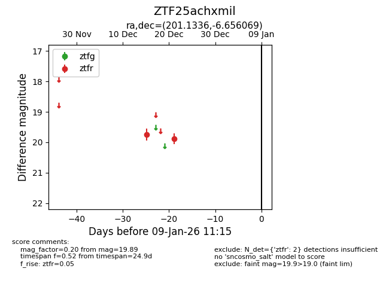
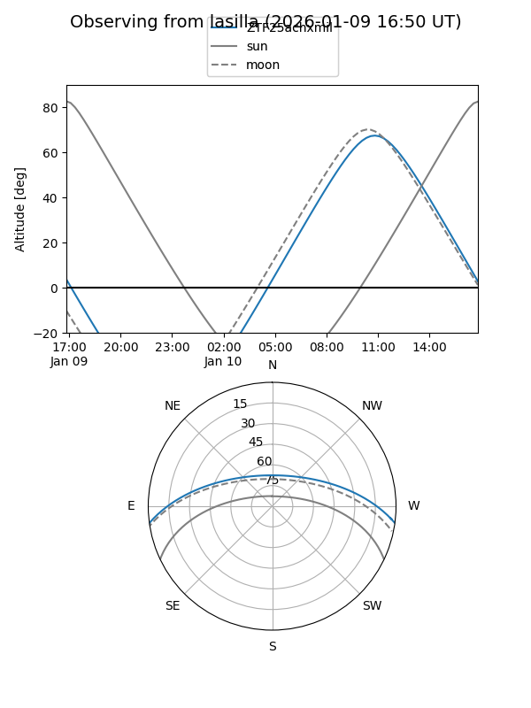
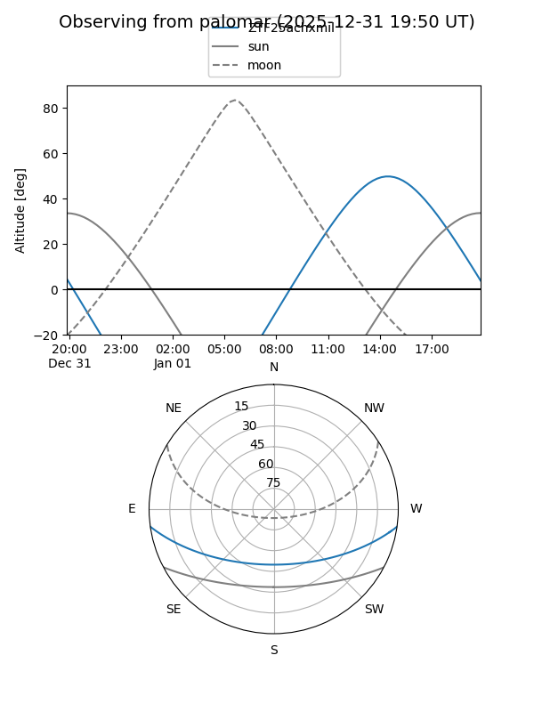

ZTF25achxmil
Target ZTF25achxmil at 2025-12-21 15:07
Aliases and brokers:
FINK: fink-portal.org/ZTF25achxmil
Lasair: lasair-ztf.lsst.ac.uk/objects/ZTF25achxmil
ALeRCE: alerce.online/object/ZTF25achxmil
alt names
ZTF25achxmil (ztf,fink_ztf)
Coordinates:
equatorial (ra, dec) = 201.1336,-6.65607
equatorial (HMS+DMS) = 13:24:32.07,-06:39:21.85
galactic (l, b) = (317.4660,+55.27897)
Flags:
Photometry:
last ztfr=19.89
2 ztfr detections
Lightcurve

Visibility


Additional plots